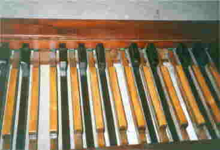
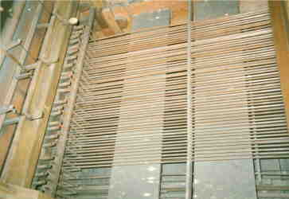

Traktura
je souhrn zařízení, která zprostředkovávají přenos stisku klávesy (tónová
nebo hrací), sešlápnutí pedálu (pedálová) nebo vytažení rejstříkové rukojeti
(rejstříková) až na otevření příslušného ventilu ve vzdušnici. Součástí
traktury jsou i některá pomocná zařízení – spojky a spínače kombinací.
Traktura janovických varhan je mechanická, celodřevěná. Všechny abstrakty
jsou z tenkých dřevěných lišt, dřevěná je i většina úhelníků (jen
ležaté úhelníky v rejstříkové a pedálové traktuře pod měchem jsou
plechové). Výhodou dřeva je nízká hmotnost a tím i malé momenty setrvačnosti
jednotlivých dílů a z toho vyplývající snadné a rychlé ovládání,
nevýhodou je změna rozměrů vlivem teploty a vlhkosti a z toho vyplývající
nutnost občasného seřízení. |
Po stisknutí klávesy 1 se zatáhne nahoru abstrakt (táhlo) 3. Přes úhelníky 4 se pohyb přenese až na hřídel 5, která pohyb rozvede doleva nebo doprava až do místa, kde stojí řada píšťal příslušného tónu. Sada hřídelí pro všechny tóny je na hřídelové desce ve skříni hned za zády varhaníka. Raménko hřídele pak pomocí dalšího abstraktu stáhne rameno přezmenu 10, jehož druhé rameno nadzvedne pomocí tyčky 11 ventilovou lištu 6 a ta se opře do bodců ventilů a tak je otevře. Rejstříková traktura obdobně otevírá ventily rejstříků. Ovládání se děje vytažením rejstříkové rukojeti 2 která přes abstrakty a úhelníky stáhne dolů rameno páky 7 a ta na svém druhém konci nadzvedne rejstříkové ventily. Pod čísly 8 a 9 se skrývají regulační matičky pro nastavení napětí traktury. |
Pedálová traktura je řešena obdobně jako traktura manuálu. Sešlápnutím pedálu 1, který je udržován ve zvednuté poloze pružinou 2 se zatlačí na tyčku 4 a raménko páky 3. Tyčka přes úhelník 5, abstrakt 7 a páku (u matky na pozici 11) stočí hřídelku 12, která svými raménky nadzvedne jednak přímo bodec ventilu 13 ve vzdušnici 17 rejstříku Violo, jednak přes tyčku 15 ventilovou lištu 16 pod vzdušnicí 18 rejstříků Subbas a Octavbas. (vzdušnice pedálového stroje je dělená, nejdelší píšťaly nekrytého rejstříku Violo 16’ tak stojí o něco níže, 14 – píšťala Violo, 19 – píšťala Subbas). Součástí pedálové traktury je i oktávová spojka – raménko 3 přes úhelník a abstrakt 6 stočí levou hřídel 8 a ta svým raménkem zatáhne za zarážku 9 na abstraktu tónu o oktávu výše (nebo níže, spojka je obousměrná, hřídelí je tolik, kolik je pedálů). Spojka se vypíná změnou výšky osky ramének 3 ve směru červené šipky, spustí – li se dolů, sešlápnutý pedál nedolehne na raménko páky 3 a nestačí tak zatáhnout za první abstrakt. Na fotografiích jsou pedály po opravě a část traktury pod podlážkou (pod pedály). |
  |
|
Součástí manuálové traktury v hracím stole je i oktávová spojka. Ta umožňuje propojit k jednočárkované a části dvoučárkované oktávy klávesy téhož tónu ve vyšší oktávě a tak výrazně “projasnit” výsledný zvuk. Nevýhodou je ztížení ovládání – jedním prstem varhaník ovládá trakturu a sadu ventilů pro dva tóny, k čemuž je potřeba téměř dvojnásobné síly. |
Po stisku klávesy 1 se přes táhlo překlopí páka 4 a ta přes tyčku zatlačí na raménko hřídelky 3. Raménko na opačném konci pak přes zarážku 5 táhne abstrakt klávesy 2 o oktávu výše. Spojka se zapíná a vypíná pohybem osy páky 4 nahoru nebo dolů podle červené šipky. Na fotografiích je detail abstraktů a ramének hřídelí spojky v hracím stole, hřídelová deska a část traktury pod vzdušnicí. |
[obsah, skříň a hrací stůl, vzdušnice, měch a regulátor, traktura, uspořádání a údržba]